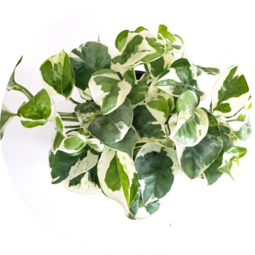

Pothos
Water: Once every week
Pothos' prefer bright, indirect light, it adapts well to a range of light conditions, with some people even growing it in offices with artificial, fluorescent lighting. Not recommended to put place this indoor plant in high amounts of sunlight. A Pothos doesn't have a high-maintenance watering schedule. One of the biggest reasons this plant dies is not because of it drying up but rather because of overwatering. During the dry season you might need to water it every week, and during the humid season even less.